NEXTSTEP In Focus, Fall 1993 (Volume 3, Issue 4).
Copyright ©1993 by NeXT Computer, Inc. All Rights Reserved.
NFS Performance Tuning
Wayde Schroeder
Tuning NFS to work efficiently can both increase the speed at which you access NFS-mounted files and decrease the load on your network. This article explains the NFS tuning parameters you can set and shows you how to optimize the performance of Ethernet adapters on Intel-based PCs.
Overview
The Network File System (NFS) allows a local computer to access files on another computer, as if the files were on the local computer's disk. Because most home directories and applications reside on NFS-mounted file systems, improving NFS performance on a network can make a big difference in user productivity.
This article explains how to tune two basic NFS operations. It also compares the performance of the three Ethernet adapters currently available for use with NEXTSTEP, and shows how to get the best performance from each.
NFS tuning parameters
You can tune two aspects of NFS operation: How an NFS server is mounted and how the client and server communicate. All tuning parameters must be specified by the initial mount command.
The most important tuning parameters are rsize and wsize. They control the sizes of the NFS read and write buffers, and therefore directly affect how long reading and writing take. For some networks, timeo and retrans are also important. The other parameters give you finer control over how to initiate mounts, what to do if communication fails, and what information to cache.
Here's how to tune both NFS mounting and client/server communication.
Mounting the server
There are three ways to initiate an NFS mount: The client can request a mount when its host computer starts up, the client can request a mount automatically with the autonfsmount command when the remote file system is needed, or you can mount a remote file system by hand using the mount command.
When and how to use each method are covered in detail in "Techniques for Using the Network File System" (support bulletin 1, Summer 1991), so I won't explain it all here. What's important for this article is the fact that you tune NFS mounting the same way, no matter which mount method you use.
The mount tuning parameters affect how the communication between the NFS client and the server is initiated. To initiate a mount, the client sends a request to a server. The server checks the access rights of the directory that the client wants to mount and the access rights of the client itself. If the server's NetInfoTM database shows that the client is allowed access, the server sends the client an NFS file handle, which points to the mounted directory.
Note: To find out more about NFS access rights, see the UNIX manual page on exportfs.
Mounting options
You tune the mounting process by setting how long the client waits for the server to reply and how many times the client retries. You can also specify whether the client should run the retry process in the background or foreground. Retrying in the background allows the client to run other tasks while waiting; retrying in the foreground causes it to just wait for a response. Foreground retries are only useful if the client can't operate without the mount.
| Parameter | Use | |
| fg or bg | Determines whether retries run in the foreground or background. Default is fg. | |
| mnttimeo | Sets how many seconds the client waits for a response for the server before retrying. Default is 20 seconds. | |
| retry | Sets the number of times the client retries a mount request before giving up. Default is 1 time. |
Figure 1: Parameters for tuning NFS mounts
For example, Figure 2 shows settings for mounting a directory on client eng. The client waits 30 seconds for a response from the NFS server. If it doesn't get a response, it retries in the background up to three times.
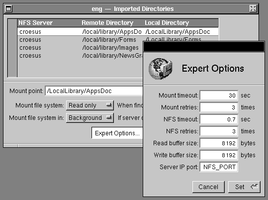
Figure 2: Using NFS Manager to set NFS parameters
Rules of thumb
Normally you should specify the bg option, so your system can retry mount requests in the background. Use the fg option if the mount provides applications or data that the client needs to operate.
The default values for mnttimeo and retry are normally fine. If the client accesses the server across a slow line--like a 56K-baud line or SLIP connection--or is overloaded, you can increase mnttimeo or retry to give the client a better chance of succeeding. Waiting longer for the server to respond doesn't cause big problems if the mount request is in the background. However, don't set these values higher than about 60 seconds--if the server doesn't respond in that time it's probably down and the client may as well give up the request.
NFS client/server communication
Once a directory is mounted, a different set of parameters takes effect. They determine how the client and server communicate. The parameters you can set are listed in Figure 3.
| Parameter | Use | |
| rsize | Sets the size of the buffer for reading data from the server. Default is 8192 bytes. | |
| wsize | Sets the size of the buffer for writing data to the server. Default is 8192 bytes. | |
| timeo | Determines how long the client waits after making an NFS request before retransmitting the request. If there is no response after this time, the client multiplies timeo by 2, waits that long, and retransmits. Default is 7 tenths of a second. | |
| retrans | Determines how many times the client retransmits a request before a soft mount reports an error and gives up, or a hard mount reports an error and continues trying. Default is 3 times. | |
| soft or hard | Determines what a client should do if the server doesn't respond after the retrans number is exceeded: Soft mounts give up, while hard mounts keep trying. Default is hard. | |
| rw or ro | Determines whether the server can both read and write (rw) or read-only (ro). Home directories and source code servers should be read-write so users can save their updates. LocalApps servers can be mounted read-only. Default is rw. | |
| acregmin | Sets the minimum time file entries remain cached, in seconds. Default is 3 seconds. | |
| acregmax | Sets the maximum time file entries remain cached, in seconds. Default is 60 seconds. | |
| acdirmin | Sets the minimum time directory entries stay cached, in seconds. Default is 30 seconds. | |
| acdirmax | Sets the maximum time directory entries stay cached, in seconds. Default is 60 seconds. | |
| noac | Turns file attribute caching off; omitting this parameter leaves caching on. |
Figure 3: Parameters for tuning NFS communication
You set these parameters the same way you set the mount parameters. For example, Figure 2 also shows how to set communication parameters with NFS Manager.
Reading and writing
The most important parameters are rsize and wsize. Set them to the largest sizes your network can handle with a minimum number of time-outs. Don't bother setting them higher than 8192--there's no added benefit.
Timing out and retrying
Set timeo to maximize efficiency when the server doesn't respond to a request. Setting it too high causes the client to wait too long to retransmit when a server drops a request, and therefore increases access times. Setting it too low may cause the client to retransmit when the server didn't drop a request but was just slow to respond. These unnecessary retransmit requests increase network traffic and slow things down even more.
Setting retrans can stop a client from hanging when a server of a read-only, soft-mounted partition fails. For hard mounts this parameter only determines when an "NFS server
server_name not responding, still trying" message will be displayed. You don't normally need to change this parameter.
Soft and hard mounts
Always use the hard parameter with read-write mounts. A server must be stateless, which means it has to be able to restart at any time. When it comes back up, it reestablishes communication with its clients, and continues where it left off. When a client writes to a server, the server always sends a reply saying that the data has been written to a non-volatile media, like a hard disk, so the client knows exactly which data was received successfully. Using the hard setting ensures that the client of a failed server keeps trying until the server comes back up. After a server reestablishes communication, the client can continue where it left off with no data corruption.
In contrast, if a server is mounted read-write with the soft parameter and the server goes down while a client is writing data, the client can give up without finishing the write operation. This leaves the server with incomplete, corrupted data.
Attribute caching
You can use the parameters acregmin, acregmax, acdirmin, acdirmax, and noac to cache attributes of files and directories. The minimum and maximum parameters control whether the client caches directory entries about files and subdirectories, and how long information stays in the cache. Caching this data reduces the number of messages sent across the network. In addition, the mapped file system (MFS) interacts with NFS--if NFS is caching a file's attributes, MFS tries to keep pages of that file in memory as well. This improves performance further.
You may notice the effects of read caching if you compile source code from an NFS server: The first compile you run is relatively slow compared to later compilations. This is because the header files are read in from the server and information about them is cached on the client. Since these files don't normally change between compilations, the information about them is held in the client's cache indefinitely, until it's swapped out to make room for other information.
A side effect of caching is that a client may not always have the most recent information about a file. For example, if a user on one client computer changes a file on a server, a user on another client computer may not detect the change until the client's attribute caching time expires. If you're using an application that needs to know immediately when a remote file changes, use the noac parameter to turn off caching.
Another reason to set the noac parameter is testing. For example, one of the tests described later in this article times a read request from the server. The data is read ten times and the average time is measured. If attribute caching had been turned on, the file's information would have been read just once from the server and cached on the client. So the next nine read requests would have gotten data not from the server but from the client's cache, giving incorrect test results.
Tuning tests
Three Ethernet adapters are now supported for NEXTSTEP for Intel Processors: The 3Com EtherLink® III, SMC EtherCard PLUS Elite 16TM, and Intel EtherExpressTM. Each gives you a choice of external connector--BNC, AUI, or twisted pair. (Not all connectors are available on all adapters.) The type of external connection you use doesn't affect performance or tuning of NFS on the adapter, but each adapter has different levels of performance and must be tuned differently.
I ran the adapters through two tests. The first was reading a one-megabyte file from an NFS server, with the Ethernet adapter in the client computer. The second test was writing a one-megabyte file to an NFS server, with the Ethernet adapter in the server.
To perform the read or write I copied a file. I varied the values of the rsize, wsize, and timeo parameters one at a time, measuring the time it took to read or write and the number of time-outs that occurred. I repeated each test ten times and took the average time as the result. The better performing adapter has shorter copy time and fewer timeouts.
The PC I used was an ALR® Evolution IVTM DX-2/166 EISA, with a Conner® 1.3-gigabyte disk and a DPT® 2022 SCSI controller with 4 megabytes of cache set for read and write caching. I used a 25-megahertz, 68040-based NeXTstation as the second system in all the tests. I also ran the tests between two 25-megahertz, 68040-based NeXTstation computers, to show the effects of changing the parameters for existing NeXT computers on a network.
3Com EtherLink III
This adapter has the smallest input buffer of the three: It's just two kilobytes. For this adapter, NFS read and write performance goes up and the number of time-outs drops dramatically when rsize and wsize are 1024 bytes. With larger values the buffer fills up and the adapter misses packets. Decreasing the values further decreases performance while reducing time-outs only slightly, and so isn't worthwhile.
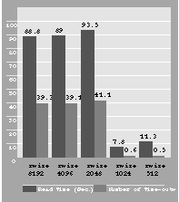 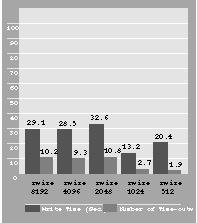
Figure 4: 3Com EtherLink III read test Figure 5: 3Com EtherLink III write test
Changing the timeo value affects speed only if a significant number of time-outs occur, as the next two graphs show. I plotted the results of changing it only for this adapter, because it didn't affect other adapters.
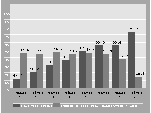
Figure 6: 3Com EtherLink III read test, varying timeo
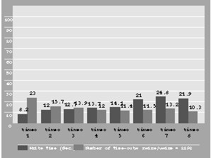
Figure 7: 3Com EtherLink III write test, varying timeo
Reducing timeo increases speed because a retransmit request is sent sooner for a dropped packet. With the default timeo of 7, there are 13.2 time-outs and a write time of 24.8 seconds. By decreasing timeo to 3, you get about the same number of time-outs, but the write speed increases almost 50 percent to 12.7 seconds.
SMC EtherCard PLUS Elite 16
This is the mid-range adapter, with a larger receive buffer than the 3Com adapter.
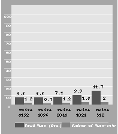
Figure 8: SMC EtherCard PLUS Elite 16 read test
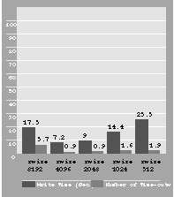
Figure 9: SMC EtherCard PLUS Elite 16 write test
An rsize and wsize of 4096 provide the best performance on this adapter.
Intel EtherExpress
This adapter has the largest receive buffer of the three and provides the best performance.
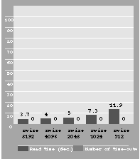 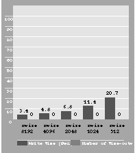
Figure 10: Intel EtherExpress read test Figure 11: Intel EtherExpress write test
The large buffer means there are no time-outs, no matter how you set the tuning parameters. Performance drops as rsize and wsize decrease, so keep them as large a possible.
NeXTstation
The data for a NeXTstation provide relative data and highlight some problems you may have in mixed networks. In particular, the NeXTstations slow as rsize and wsize decrease. If you're using NeXTstations as NFS servers and have 3Com EtherLink III adapters on the same network--or to a lesser extent, SMC EtherCard PLUS Elite 16 adapters--changing rsize and wsize will affect each adversely.
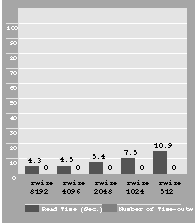 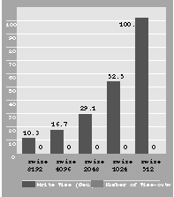
Figure 12: NeXTstation read test Figure 13: NeXTstation write test
Decreasing the buffer size to 1024 significantly reduces the performance of NeXTstations. Reducing timeo can increase the speed of the 3Com adapter when setting rsize and wsize to 8192, which keeps the performance of the NeXTstations at its best. However, you will still have many time-outs--and therefore retransmissions--on your network. This will increase the network traffic and slow things down as network load goes up, and isn't the best solution.
A better choice is to set rsize and wsize to 1024 for the computers using 3Com adapters. This reduces the number of time-outs and retransmissions on the network. The optimal but not necessarily most practical thing to do is to put the different hardware in different NetInfo domains, so you can use different NFS mount parameters.
Result summary
For PC networking, the Intel EtherExpress adapter provides the best performance of the three currently compatible adapters, so it's the best choice for performance.
If you must use a different adapter, you can still tune NFS to get optimal performance.
| Adapter | wsize | rsize | timeo | |
| 3Com EtherLink III | 1024 | 1024 | 3 | |
| SMC EtherCard PLUS Elite16 | 4096 | 4096 | - | |
| Intel EtherExpress | 8192 | 8192 | - |
Figure 14: wsize, rsize, and timeo settings for highest performance
Conclusions
In most cases, tuning NFS performance can make a big difference in overall network performance, and thereby in system usability. To fine-tune your system, you can run tests like these. Be sure to turn off caching while testing, so you get accurate results.
Your Ethernet media also affect how you tune NFS parameters. In future articles I'll cover tuning NFS across T1 lines, 56K-baud lines, routers, and SLIP connections. n
Wayde Schroeder is a Premium Support Engineer. He's been at NeXT for three years. You can reach him by e-mail at Wayde_Schroeder@next.com.